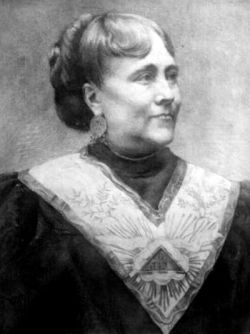

MARIA DERAISMES
Cách đây gần hai chục năm, một lần nhân đi thăm một chị bạn thân quen nhau từ lâu, chị Suzanne Fournier, mà tôi được đọc mấy hàng này trên cái bệ một pho tượng:
Maria Deraismes, 1828-1894
Triết gia - Nhà hùng biện - Nữ sĩ
Chủ tịch đầu tiên của
Hội Cải thiện thân phận phụ nữ (1)
Và tranh đấu cho nữ quyền.

Tượng Maria Deraismes
Bệ đó đối diện với bệ của Jean Leclaire, người đã có công năm 1844 dùng chất blanc de zinc thay cho chất blanc de céruse “để bảo vệ sức khòe thợ thuyền” và đã có tinh thần cải cách về vấn đề Tương tế, vấn đề cho nhân viên được chia lời với chủ nhân.
Xưa kia, trên hai bệ đó đều có tượng bằng đồng đen, nhưng quân Đức đã hạ xuống cả rồi; cảnh phá hủy đó đáng buồn thật, nhưng vẫn còn nhắc cho đám bồ câu, trẻ em, các trai gái yêu nhau, các ông già bà cả, thường lui tới công viên ở quận XVII (Paris) đó nhớ rằng đã có hai nhà bác ái, nổi danh vì tình yêu nhân loại.
(...) Chúng ta chỉ còn giữ được mỗi một bức chân dung chính thức của Maria Deraismes. Trên chân dung đó ta thấy một bà già xấu, béo phị, kiểu cách, y như mọi bà đã quá ngũ tuần trong giới trưởng giả thời đó, coi mà ngán. Chỉ nhờ mỗi chiếc huy chương tam điểm lớn đeo ở ngực bà, ta mới nhớ rằng bà không phải là một phụ nữ tầm thường, trái lại bà có quyền uy chẳng riêng trong khu vực đó mà cả trong nhiều khu vực khác nữa.
Nhưng còn một bức chân dung khác, ít người biết, ngược hẳn với bức trên. Bức này, vẽ một thiếu phụ trẻ, mảnh mai, tóc rậm, mắt sâu và cách xa nhau, khóe miệng thanh nhã, thông minh, cổ cao, mặt tròn, đường nét của má duyên dáng. Bà bận một chiếc áo hở cổ màu sẫm, cổ áo và ống tay có một dải thêu rộng.
Và nhất là có chiếc nón trên đầu.
Chiếc nón đỏ tỏ rằng bà đắc ý, muốn tỏ vẻ trẻ trung của mình, muốn được người khác quý mến mình. Nón màu sẫm, vành mềm. Phía trước đính một cái bông lớn và một chiếc lông chim trắng rủ xuống phía sau gáy.
Nét mặt đó đúng là nét mặt nhân vật kỳ dị đã làm cho dân chúng Paris phải mê mẩn đó, đã chiến đấu dữ tợn như sư tử để cải thiện thân phận đàn bà và đã cách mệnh hội Tam Điểm. Hai cuộc chiến đấu đó, cho hội Tam Điểm và cho sự bình quyền giữa nam nữ, có liên quan mật thiết với nhau.

Nhưng Bà có tượng ở Công viên đó, bà Maria Deraismes, là ai vậy?
Chính ra, tên của bà là Marie Adelaide Deraismes. Bà sinh ra ở Paris, đường Saint Denis, là thứ nữ của ông François Deraismes và bà Anne Soleil.
Chị ruột là Anne Marie, hơn bà bảy tuổi.
Thân phụ bà, François Deraismes, ở trong một gia đình đã mấy đời làm nghề mãi biện, nhờ khéo làm ăn mà xây dựng được một sản nghiệp vững vàng và thành lập một hãng quan trọng. Theo Eliane Brault thì “giới sang trọng nhất ở Paris thường lui tới nhà bà François Deraismes”.
Nghề mãi biện đó truyền tới François được ba đời rồi thì ngưng; Maria không nối nghiệp cha, mà cụ không có người con trai nào cả, và mất năm 1852.
Có lẽ vì cụ thất vọng không có con trai để nối dõi, nên cho bà Maria học hành như con trai, như vậy là trái tục thời đó, trái cả với nền giáo dục trong giới trưởng giả của bà nữa.
Bà rất ham học, nhiệt liệt theo nền giáo dục đó nó hợp với những khuynh hướng tự nhiên mỗi ngày mỗi rõ rệt của bà.
Nếu sống ở thời đại chúng ta thì chắc chắn bà đã thành công rực rỡ ở Đại học. Nhưng ở đầu thế kỉ XIX bà không thể vô Đại học được. Với lại thân phụ bà phải lo điều khiển một hãng lớn, trách nhiệm nặng nhọc, ít có thì giờ để săn sóc kĩ lưỡng sự học của con gái. Vì vậy mà bà Maria được tự do, tùy hứng muốn học gì thì học. Và bà hăng hái học đủ các môn: bà học rất kĩ môn cổ học vì bà cho nó là căn bản cần thiết cho sự đào luyện tâm trí, rồi bà học nhạc, thi văn, họa, lại tò mò đọc các thánh thư, học cổ ngữ Hi Lạp và La Tinh, cùng các ngôn ngữ phương Đông. Cả nhà, đặc biệt là Anna, chị ruột bà, người rất yêu quí bà, đều vừa phục vừa khuyến khích bà trong các môn học đó.
Chưa đầy mười hai tuổi, mà ngoài những khuynh hướng khác, bà đâ tỏ ra hùng biện.
Mùa hè, bà thường theo song thân lại nghỉ trong điền trang của gia đình Mathurin, gần Pontoise.
Trong hoa viên của điền trang có một cái đình(2); bà dùng đình đó làm diễn đàn để tập đọc những diễn văn dài và uyên bác trước những thính giả tưởng tượng.
Lúc đó, ở Seneca Falls (tiểu bang New York) một nơi cách xa bà mấy ngàn cây số, có một cuộc hội họp đầu tiên để bênh vực Nữ quyền, do Elizabeth Gady Stanton làm chủ tọa, bà này là một người nội trợ kiểu mẫu, có bảy người con.
Thiếu nữ đương tập diễn thuyết dưới những tàng cây trong vườn gia đình Mathurin đó có ngờ đâu rằng mình có liên quan chặt chẽ với những phụ nữ phương trời xa nọ và sau này sẽ qua Mĩ, nhập vô đoàn thể của họ, thành một nhân vật nổi tiếng nhất trong nhóm.
ít lâu sau, thân phụ của bà thấy bà có hoa tay, bất chấp thành kiến, dư luận đương thời cho bà lại học trong một phòng vẽ có tiếng. Kế đó cụ qui tiên.
Bà chị Anna, lúc này đã theo chồng, ra ở riêng; trong nhà chỉ còn Maria và thân mẫu. Bà say mê học vẽ, mới đầu được họa sĩ Bỉ Cartier hướng dẫn, sau theo học Léon Cognet. Phải ngưng học trong một thời gian khá dài vì bị một bệnh nặng; “mặc dầu có hai mươi y sĩ săn sóc” bà cũng bình phục được.
Chẳng bao lâu, bà chị Anna cũng góa chồng mà không có con, cũng về ở chung với mẹ và em.
Phòng khách trong nhà vẫn được nhiều người lui tới. Nhờ tài hùng biện và trí thông minh của Maria mà không khí các cuộc hội họp giữ được cái tinh thần cấp tiến.
Thời gian trôi qua.
Năm bà ba mươi ba tuối, thân mẫu cũng qui tiên nữa. Bà soạn thử ít vở kịch, thất bại, sau quyết
tâm lựa con đường hợp với bà nhất: bênh vực phụ nữ mà quyền lợi trong xã hội còn thua thiệt, chưa được bình đẳng với đàn ông.
Bà hướng về phía các chị em thợ thuyền, công nhân, mà nâng đỡ họ; hướng về hạng gái điếm tình
cảnh điêu đứng, mà mỗi ngày mỗi đông thêm, đáng lo ngại cho xã hội. Bà gặp Jenny d’Héricourt, người đã hùng hồn bài bác luận điệu chống sự giải phóng phụ nữ do Pierre Joseph Proudhon chủ trương trong cuốn La Pornocratie ou Les Femmes dans les Temps modernes (Bọn bán dâm hoặc Phụ nữ trong thời hiện đại). Mấy hàng dưới đây trích trong chương về các phụ nữ được giải phóng, đủ cho độc giả thấy giọng cuốn đó ra sao:
“Các bà như vậy thì chúng tôi không ưa các bà được: chúng tôi thấy các bà xấu xa, ngu xuẩn, độc hại. Sao, các bà trả lời ra sao? (...).
“Không thể đảo ngược thiên chức được, không thể thay nam tính hay nữ tính của mình được. Đàn ông mà muốn có nữ tính thì hóa ra đê tiện, khốn nạn, dơ dáy. Đàn bà mà muốn có nam tính thì hóa ra xấu xí, điên khùng, đĩ thỏa, như con khỉ cái”.
Giọng mới nhã nhặn làm sao!
Lần lần các bà dưới đây đứng về phe Jenn d’Héricourt. Léonie Champeix, quả phụ của một kí giả có tư tưởng tự do, Louise Michel; Pauline Kergomark người có sáng kiến thành lập các lớp Mẫu giáo; Jeanne Deroin, nổi tiếng vì đã ứng cử vào viện Lập pháp năm 1849 (dĩ nhiên là không trúng cử!) và đã tranh biện với Proudhon. Ông này không thể quan niệm được “một người đàn bà mà làm nhà Lập pháp”, cũng như không thể quan niệm được “một người đàn ông làm vú em”. Janne Doroin viết bài đăng báo đáp ông ta rằng: “Đàn ông có những cơ quan nào cho phép họ làm nhà Lập pháp? Nếu ý của Thiên nhiên quả đã hiện ra rõ rệt về phương diện đó như ông nghĩ thì ông khỏi phải ngại phụ nữ chúng tôi tranh với các ông vào viện Lập pháp, mà chúng cũng khỏi phải ngại các ông tranh với chúng tôi làm vú em!”.
Trong số những người hợp tác với Maria còn hai bà nữa, Hubertine Auclert và Josephine André đã thành lập nghiệp đoàn đầu tiên cho các phụ nữ làm nghề thợ may: thời đó nghề may đã có nghiệp đoàn rồi nhưng phụ nữ không được gia nhập. Bà Hubertine Auclert năm 1876 đã báo cáo về sự lao động của phụ nữ.
Cũng vào khoảng đó, ở Londres, Flora Tristan mặc dầu gắng sức mà không được Liên đoàn Thợ thuyền cho phép nêu lên vấn đề lao động của phụ nữ.
Còn bà Maria Deraismes, sau khi viết ít bài báo đòi cải thiện thân phận của phụ nữ, nổi danh liền và được nhiều nhật báo mời hợp tác. Bà thành ngay kí giả của các tờ Grand Journal, Epoque, Nainjaune. Sách bà viết về phương diện văn chương, không có gì đặc biệt, nhưng các bài báo của bà rất hay, gây được tiếng vang, độc giả rất hoan nghênh. Bà có một đức quí là nhiệt tâm, và có tài diễn được đúng ý nghĩ của mình. Nhờ thành thực và tin chắc chủ trương của mình đúng, nên bà có một giọng văn mạnh mẽ, thuyết phục được người đọc. Bà có ý thức cao về sự quân bình và công bằng. Do bản năng bà nhận định được chức vụ của phụ nữ trong một thế giới đương tiến bộ. Không tự cao mà cũng không ích kỉ, bà biết rằng nhờ được học hành, phát triển cá tính mà bà có thể làm được nhiều việc giúp đời. Nhìn xã hội chung quanh, bà thấy bà sở dĩ được như vậy không phải là vì tư cách hơn người, mà chỉ nhờ được những hoàn cảnh thuận tiện hơn người thôi. Cho nên bà đòi cho các phụ nữ khác cũng được những hoàn cảnh đó.
Bà vượt ra ngoài cái xă hội trưởng giả của bà, nhất là vượt cái khu vực trong đó phụ nữ bị giam hãm; và chẳng bao lâu một bọn người có tinh thần dân chủ tự do quây quần ở nhà bà.
Trong mấy năm đó, bà hoạt động nhiều, diễn thuyết mấy lần liên tiếp về thân phận của phụ nữ ở Tổng cơ quan hội Tam Điểm Pháp đường Cadet.
Thời đó người ta không tưởng tượng được rằng đàn bà mà lại dám đăng đàn. Maria Deraismes mặc dầu quyết tâm làm cho thính giả chấp nhận chủ trương của mình, nhưng không đưa ngay chủ trương đó ra, sợ thính giả phản đối. Bà khôn khéo dẫn lời của cổ nhân Plaute và Térence một cách trung thực nhờ bà học rộng và vững.
Bà đẹp, lịch sự mà có một sản nghiệp vĩ đại. Ở một thời mà một chị bồi phòng lãnh được từ năm tới mười lăm quan mỗi tháng, một người thợ đàn bà tiêu mỗi ngày từ ba cắc tới ba cắc rưỡi, còn một người đàn ông kiếm được tám trăm quan mỗi năm đã có thể sống phong lưu rồi, thì bà có một số lợi tức hằng tháng là bảy mươi lăm ngàn quan bằng khoảng bảy vạn quan hiện nay(3).
Bà có thể rất yên chí, nghĩ gì thì viết ra như vậy, chẳng cần phải tự hỏi có làm phật ý ai không. Được tự do như vậy còn thú gì bằng.
Bà cân nhắc từng tiếng, khi thì dí dỏm, khi thì hung dừ, mạt sát xã hội đã để cho tiền bạc chỉ huy hết thảy, bất kể là hậu quả ra sao. Bà bảo: “Sự lương thiện là một gánh nặng quá mà; cho nên người ta đã chia nó thành nhiều phần nhỏ tùy tinh thần đạo đức của mỗi người... Người ta lương thiện một phần tư, một phần tám hay một phần mười sáu, cứ như vậy, giảm xuống mãi cho tới khi chỉ vừa đủ lương thiện để khỏi bị treo cổ thôi...”.
Ngay hôm sau, các báo đều tường thuật bài diễn văn đầu tiên của bà. Có tờ viết:
“Dù ngồi trong ghế bành dành cho diễn giả hay đứng trên diễn đàn, bà luôn luôn rất mực ung dung, như cá ở trong nước vậy; bà biết mình muốn gì, mình tin điều gì và hăng hái muốn truyền những điều tin tưởng nhân từ, chín chắn của mình cho thính giả.
“Giọng của Maria Deraismes thật tuyệt. Vừa dõng dạc vừa uyển chuyển; lúc lên lúc xuống, thay đổi một cách dễ dàng. Bà thành kính, khăng khăng xác nhận điều bà tin, không hề thất vọng, luôn luôn tìm lí lẻ để hi vọng: điều đó thực cảm động và an ủi chúng ta”.
Hiện nay có lẽ không ai biết rõ con người cùng cuộc đời của Maria Deraismes bằng bà Bliane
Brault. Bà này nhận thấy rằng “mỗi diễn văn của Maria Deraismes so với diễn văn trước lại đánh dấu thêm một tiến bộ về phép hành văn. Văn xuôi của bà càng ngày càng trong trẻo ra, có cái hơi mạnh hơn, và trừ vài hình thức của thời đại đó nay không còn dùng nữa, còn thì lối vãn đó ngày nay vần có thể coi là hợp thời”.
Nhờ có tài, có nhiệt tâm, và như có một hào quang tỏa ra, bà được nhiều người trung thành giúp đỡ. Nhiều người trong hội Tam Điểm thành những bạn trung tín nhất. Những người hăng hái chống đỡ bà nhất. Sở dĩ vậy là vì Maria Deraismes có những tư tưởng tiến bộ giống tư tưởng của họ; một lẽ nữa là họ không ưa bọn tăng lữ, và đa số là những người muốn cải thiện thân phận của phụ nữ, chiến đấu để giải thoát phụ nữ.
(...) Thời đó là một thời cách mạng cũng sôi nổi như cách mạng 1789 chứ không kém. Nó là hậu quả tự nhiên và sôi nổi của cuộc cách mạng 1789.
Các bạn của Maria Deraismes có những tên vang trong thành phố Paris, như Emile de Girardin, Léon Richer, Geoges Martin, Jose Maria de Hérédia, Laisant, Alexandre Weil, Tony Revillon, Hamel, Naquet (người chủ xướng đạo luật về ly dị) Francisque Sarcey, Camille Flammarion, Jules Claretie, Victor Hugo. Germain Case, Henri Deschanel v.v...
(...) Ở cuối thế kỷ XIX đó, phong trào xã hội nổi lên mạnh như giông tố; những tư tưởng cách mạng được hoan nghênh; và ít năm sau những tư tưởng đó đắc thắng, người ta cho nữ sinh được học ở trung học như nam sinh là một điều tự nhiên, đáng mừng nữa.
Ở bên Anh, cũng có một sự tiến bộ như vậy, các nhà lãnh đạo phong trào giải phóng phụ nữ,
bắt đầu tẩy chay một tôn giáo cơ hồ như mỗi ngày mỗi hư hại, ngoan cố hơn, chống với một thế giới đương biến chuyển.
Họ không nghi ngờ cái giá trị tinh thần cúa tôn giáo đó mà nghi ngờ cách thức Giáo hội áp dụng những giá trị đó. Trong khu vực đó cũng như trong các khu vực khác, không phải là thể chế mà chính là con người đã chịu trách nhiệm một phần về sự phá sản, suy sụp.
Chẳng hạn Harriet Martineau. Annie Besant ở Anh, Clémence Royer ở Pháp, đã được dạy dỗ
trong sự tôn trọng kỉ luật tôn giáo, mà lúc này cũng thấy hoang mang, nhiều khi đau lòng vì phải theo những điều trái với lương tâm mình.
Có lẽ vì vậy mà những phụ nữ đi tiên phong trong phong trào hô hào nữ quyền và muốn hoạt động tích cực, đắc lực cho chủ trương của mình mau thực hiện được, phải hướng về những nhóm có tinh thần nửa triết lí, nửa bí truyền(4). Vì những nhóm này nếu không khuyến khích họ thì ít nhất cùng tôn trọng cuộc chiến đấu của họ chứ không nguyền rủa họ.
Clémence Royer sinh trong một gia đình theo phái chính thống(5) rất mộ đạo. Bà là một triết gia, một kinh tế gia, một nhà vật lí học và vạn vật học, năm 1862, được nhận chung một giải thưởng với Proudhon về cuốn Théorie de L'lmpôt ou de la Dime sociale (Lí thuyết đánh thuế hoặc bàn về thuế thập phân xã hội). Bà dịch cuốn Origine des espèces (Nguồn gốc các chúng loại của Darwin, trong bài tựa bản dịch đó, bà kịch liệt la lớn: “Tôi không để cho người ta nhốt tôi vào cái ve đâu, tôi sẽ làm bật nút ve lên mà chui ra!”. Sau bà vô hội Tam Điểm, thời đó được coi là thành trì của chủ nghĩa Duy lí, nhưng cứ xét dĩ vãng cùng tinh thần của những chi hội Anh và Đức thì rõ là có tinh thần biểu tượng và thần bí.
Cũng xuýt xoát vào thời đó, bà Harriet Martineau tóm tắt và dịch ra tiếng Anh triết lí của Auguste Comte. Triết gia này viết thư khen bà:
“Từ mười năm nay tôi vẫn muốn đúc học thuyết của tôi lại; bà đã làm giùm tôi công việc đó một cách tài tình, đại đa số độc giả chắc thích đọc bản của bà lắm”.
Về tư tưởng bí truyền thì Auguste Comte là học giả phiêu lưu nhất, cuồng bạo nhất thời đó!
Bà Annie Besant cũng cực đoan chiến đấu cho sự giải thoát phụ nữ, phải xa các con, rồi bị đưa ra tòa. Bà sẽ thay Hélène Blavatsky làm chủ tịch hội Thông Thiên học.
Tóm lại, hồi đó người ta không bài xích đạo Công giáo hay đạo Tin lành bằng bài xích cái bề ngoài của những đạo đó.
Những người tranh đấu cho nữ quyền bắt buộc phải lựa một trong hai đường này: hoặc là can đảm tiến tới, chống lại truyền thống và xã hội; hoặc là chịu thua mà quay lưng lại với tương lai của nhân loại.
Dĩ nhiên sau này sẽ có những phụ nữ theo Công giáo hoặc Tin lành đứng về phe họ, cùng
hoạt động với họ, sát cánh với họ mà chiến đấu, những thời đó, những phụ nữ đó vẫn còn nghiêm khắc giữ giáo lí nếu chỉ có thể tiến song song thôi chứ chưa nhập bọn được, thành thử trong một giai đoạn ngắn, chẳng có tác động gì quyết định tới toàn thể nữ giới cả.
Nhưng ở trong tổng hội Tam Điểm, sự giải thoát phụ nữ được chấp nhận là một trong những nguyên tắc căn bản của đời sống xã hội. Ở đó người ta vẫn tiếp tục bàn cãi về vấn đề có nên mở các xưởng cho phụ nữ không; tuy nhiên số người chống đối vẫn là đa số.
Những kẻ chống đối đó viện nào là tục lệ tổ tiên như vậy, nào là Hiến pháp Anderson (6) cấm đoán điều đó; họ lại còn cho Maria Deraismes là một thứ quỉ cái, từ bản thể cũng đã khác hẳn các phụ nữ khác rồi, vậy thì không thể chấp nhận chủ trương của bà được.
Một nhà báo, Léon Richer bạn thân của Maria giữ chức Tôn Sư trong một chi hội Tam Điểm, là người đầu tiên chiến đấu để cho phụ nữ được gia nhập hội, kiên nhẫn nêu cao hồng kì cho tới năm 1850, chẳng những ở trong Hội mà cả ở ngoài Hội nữa “để bằng mọi cách hợp pháp, giải thoát cho phụ nữ khỏi cái thân phận thấp hèn mà luật pháp từ xưa tới nay giam hãm họ; tình trạng thấp hèn đó trái với luật, với sự công bằng, sự tấn bộ và trái với danh dự nữa”.
Năm 1867, Léon Richer cùng với Maria Deraismes cho ra môt tờ báo, tờ Le Droit des Femmes (Nữ quyền). Nhưng quan niệm của chính quyền thời đó còn lạc hậu quá, nhất định không chấp nhận rằng phụ nữ được phép đòi quyền này quyền nọ. Tờ báo phải đổi tên là L'Avenir des Femmes (Tương lai phụ nữ), ý nghĩa khác hẳn đi rồi. Tới khi chính phủ Mac Mahon đổ, Léon Richer và Maria Deraismes mới được phép lấy tên cũ.
Ngay từ khi tờ Le Droit des Femmes mới ra những số đầu, bà Maria Deraismes đã là người cộng tác quan trọng nhất. Bà viết về các vấn đề phụ nữ, cũng được độc giả hoan nghênh như hồi mới bước vào làng báo.
Những bạn của bà từ buổi đầu cũng gởi bài đăng trong hai tờ L'Avenir des Femmes và Le Droit des Femmes.
Chẳng hạn bà Hubertine Auclert. Rà này nhiệt liệt trình bày chủ trương của mình về nữ quyền ở Hội nghị đảng Xã hội ở Marseille và sau này cho ra tờ La Citoyenne (Nữ công dân), một tờ tuần báo đứng vững được mười năm. Chính bà năm 1880, không chịu đóng thuế, viết một bức thư ngỏ gời ông Quận trưởng hạt Seine bảo rằng: “Tôi đã không có quyền kiểm soát cách chính phủ dùng tiền của tôi ra sao, thì tôi không muốn cho chính phủ tiền nữa”.
Tờ báo thành công, được nhiều cây bút nổi danh trong nam giới họp tác, như Camille Flammarion, Jules Claretie, Francisque Sarcey, Victor Hugo.
Tòa soạn đặt ở số 44 đường Blanche, Paris, hoạt động đắc lực cho quyền lợi phụ nữ, lại in
nhiều tập sách mỏng rất có ích, luôn luôn theo dõi sự tiến bộ về xã hội và chính trị của phụ nữ trên thế giới. Lúc này chủ nhiệm là nữ luật sư Andrée Lehmann, phó hội trưởng Hội Phụ nữ thế giới, hội trưởng hội Nữ quyền (...).
Năm 1868, ở bên kia Đại Tây Dương, dọc theo con đường xe lửa xuyên Hoa Kì, một tập đoàn khoảng năm ngàn người thành lập một miền gọi là “Lãnh thổ Wyoming”. Một việc cực kì quan trọng cho phong trào phụ nữ sắp xảy ra ở đấy. Quốc hội của “lãnh thổ” đó, ngay trong khóa đầu đã quyết nghị cho phụ nữ được quyền bầu cử khi đủ ba mươi tuổi. Hai mươi bảy năm sau, lãnh thố Wyoming đã gồm trăm ngàn người, có những phụ nữ làm Thẩm
phán hòa giải và năm 1892, chức Tổng Biện lí đã giao cho một người đàn bà, điều chưa thấy trên khắp thế giới.
Rồi xảy ra chiến tranh Phổ - Pháp ở châu Âu năm 1870.
Maria Deraismes cùng với bà chị Anna lập một bệnh viện cho Quân đội ở tại ngôi nhà của bà
đường Saint Denis. Bà chẳng những giúp của mà còn tận tình giúp công nữa. Một lần nữa bà lại tỏ ra có khả năng rất cao cảm thông với người khác.
Ngày mùng 4 tháng Chạp, bà gia nhập ủy ban Cộng Hòa ở Saint Malo, như vậy chính thức đứng về phe dân chủ. Ngày 14, Thành phố yêu cầu bà đọc một diễn văn; diễn văn đó được hoan nghênh tới nổi tờ báo Le Phare de la Loire xin bà viết giúp cho một loạt bài.
Bà Eliane Brault bảo: “Nhiều người khi thấy Maria tới, bận toàn đồ đen, bảo rằng bà như bức
tượng sống của Nước Pháp bận tang phục”.
Bà có cái tài riêng, từ ngôn ngữ, cử chỉ tới y phục, đều thích hợp với hoàn cảnh, làm vừa ý mọi người.
Bà có nhiều cơ hội để trình bày và bênh vực ý kiến của mình hoặc trên báo chí hoặc trên diễn đàn. Tuổi bà càng cao thì thân thể bà càng đẫy đà không còn là thiếu nữ mảnh mai đội chiếc nón cài bông và lông đà điểu nữa, đầu tóc và y phục càng có vẻ một bà trưởng giả kiêu kì, chứ không họp thời trang, nhưng cặp mắt xám của bà vẫn tinh anh như trước. Uy thế của bà mỗi ngày một tăng, nhiều người trong nam giới gia nhập nhóm của bà, chiến
đấu cho chủ trương của bà, vì những người đàn bà có tư cách cao như bà thì tuy già mà vẫn có sức quyến rũ rất mạnh.
Nhưng khi người ta đề nghị với bà ra ứng cử vào Viện Lập Pháp, bà biết chắc rằng việc đó không nên và đưa ra những lí lẽ rất khôn ngoan, sáng suốt để từ chối, khiến người ta càng thêm phục.
Bà bảo:
- Đúng vậy, từ mười lăm năm nay tôi bênh vực quyền lợi của phụ nữ bị chôn vùi sau cách mạng 1848. Trong mọi trường hợp, tôi đã đòi cho phụ nữ được hưởng đủ cái quyền chính trị và dân sự. Phong trào đã lan rộng. Nhiều người đã chấp nhận chủ trương đó, ngay cả trong Lưỡng Viện nữa. Nhưng mặc dầu tinh thần lương tâm con người đã tiến bộ mà về luật pháp vẫn chưa có gì thay đổi cả; trong Pháp Điển cũng như trong các hiến pháp, danh từ người Pháp chỉ trỏ đàn ông Pháp, chứ không trỏ đàn bà Pháp; vậy thì tôi có ứng cử chăng cũng chỉ
là một cách để phản kháng, và dù tôi có đắc cử thì rốt cuộc nhất định người ta cũng sẽ tuyên bố rằng sự đắc cử đó vô hiệu, vì vậy tôi từ chối, không ra ứng cử.
“Sự thử ứng cử như vậy, chỉ làm chậm trễ công việc của chúng ta thôi. Thời giờ quí báu quá, chúng ta có ít thời giờ quá, không nên bỏ phí nó một cách vô ý thức.
“Ứng cử trong những hoàn cảnh như vậy thì chỉ là quảng cáo cho cá nhân tôi, nên tôi không
muốn. Vả lại tôi là đảng viên Cộng hòa, tôi yêu nước, nên không thể gây thêm một nồi lúng túng nữa để làm tăng những nỗi khó khăn bất ngờ lên. Đề nghị của anh chị em làm vẻ vang cho tôi thật, nhưng tôi nghĩ tôi từ chối thì lại giúp ích cho phụ nữ được nhiều hơn. Tôi đă hứa sẽ tích cực và bất vị lợi giúp tỉnh nhà trong công việc lớn lao chuẩn bị cuộc bầu cử, và tôi sẽ giữ lời”.
Ngày 11 tháng bảy năm 1870 do Léon Richer đề nghị và được Hội Nữ quyền giúp đỡ, bà tổ chức và chủ tọa bữa tiệc đãi các người binh vực nữ quyền. Bữa tiệc rất thành công. Nhiều nhân vật phe tự do và cấp tiến trong Quốc hội lại dự.
Victor Hugo nhân dịp đó, gởi cho bà một bức thư tán thành, trong có câu này: “Người đàn bà nào không bỏ phiếu thì không đáng kể gì cả”.
Chính trong bữa tiệc đó mà Maria đọc một bản tuyên ngôn trong đó phụ nữ đòi Quốc hội phải cho họ các quyền dân sự và chính trị. Bà ghi vào bản tuyên ngôn đó câu nổi danh dưới đây:
“Tại sao chúng tôi chỉ nói đến quyền lợi mà không nói đến bổn phận của chúng tôi? Chỉ vì về bổn phận của chúng tôi thì người ta đã cẩn thận chiếu cố tới nhiều quá rồi, không ai không thừa nhận những cái đó cho chúng tôi. Chúng tôi đòi hỏi, là đòi hỏi những cái mà chúng tôi không có kia...”.
Ngoài những hoạt động về quyền lợi công dân đó, bà còn hoài bão cái mộng này nữa, làm sao cho phụ nữ được vào Tổng hội Tam Điểm Pháp. Phải chiến đấu gay gắt, nên bà càng phải hăng hái. Trong cuộc chiến đấu đó bà được nhiều người danh tiếng
trong nam giới ủng hộ: chính trị gia, văn sĩ, ký giả, y sĩ, luật sư.
Bà cho rằng cách đó là cách hiệu quả nhất để đào tạo một số phụ nữ không theo tôn giáo mà có tinh thần cộng hòa.
Ở Đức, Bỉ, Anh nhiều trường thế tục(7) đã được mở cho nữ sinh. Ở Pháp, cuối thời đệ nhị Đế Chính, người ta cũng mở vài trường thế tục mà gọi là trường dạy nghề. Đó là công trình của tư nhân, ít người tới học. Victor Duruy năm 1867 đã cố gắng tổ chức một nền giáo dục Quốc gia theo tinh thần đó.
Nhưng phải đợi tới ngày 15 tháng Chạp năm 1879, Camille Sée, giáo sư trường Y Khoa Paris, hội viên hội Tam Điểm, mới trình một dự án đạo luật về giáo dục, dự án được Lưỡng Viện biểu quyết.
Đây là những điểm chính:
- Thành lập tức thì tại một số thị trấn, những trường trung học nội trú và ngoại trú cho nữ sinh.
- Lần lần sẽ buộc các thị trấn khác cũng thành lập những trường như vậy.
- Chương trình dạy sẽ có những môn: Pháp ngữ, ngoại ngữ, văn học sử Pháp, đại cương về Sử thế giới, Vật lý, Hóa học, Vạn vật học, Toán học, vệ sinh, gia chánh, may vá, những điều thông thường về luật, vẽ, âm nhạc.
- Nếu cha mẹ đòi hỏi thì dạy giáo lý cho nữ sinh ngoại trú mà ngoài những giờ học.
- Có thể mở thêm một lớp sư phạm cho những nữ sinh muốn sau này ra dạy học.
- Có thể mở những lớp riêng dạy nghề nếu hội đồng quốc gia và hội đồng thành phố đòi hỏi.
- Giáo sư sẽ gồm nam và nữ; nhưng hiệu trưởng phải là nữ...
Mặc dầu có nhiều phụ nữ can đảm, sáng suốt chiến đấu cho phong trào và được nhiều người giúp sức, nhưng tục lệ thời đó cản trở họ, làm cho sự chống đối mỗi ngày mỗi tăng.
Ngoài hôn nhân, phụ nữ không có quyền gì cả. Mà ngay trong hôn nhân, họ cũng phải tùy thuộc chồng về phương diện luật pháp. Đàn bà chỉ để lo việc nội trợ thôi, và để sinh con đẻ cái. Như vậy thì cho họ vô trung học và đại học làm gì?
Dĩ nhiên người ta cũng cho phép họ thờ Chúa nữa. Ngày lễ, họ ăn bận rất đẹp đi dự lễ ở Giáo đường; chủ nhật họ dắt nhau lại tiệm bánh nào sang trọng nhất.
Nhưng lối giáo dục nghèo nàn đó cũng tạo được những phụ nữ bạt tục. Chẳng hạn bà Pasteur và bà Mẹ Javouhey. Bà này, tháng sáu năm 1848 đương ở Brie Comte Robert, thấy dân chúng Paris tranh đấu để đòi quyền sống, nóng lòng, chịu không được, phải lên Paris. Tới cổng ở Paris người ta nhận ra bà, tức thì ra lệnh: “Để cho Mẹ Javouhey qua” và lệnh truyền từ ụ cản này tới ụ cản khác.
Ở đảo Réunion, ở Senegal, ở Caynenne, bà chiến đấu cho công lý, săn sóc bệnh nhân, dạy dỗ trẻ em. Nhất là bà đã đả kích sự kỳ thị chủng tộc, chống thành kiến, thuyết phục chính quyền, dám có sáng kiến. Bà viết: “Tôi nói thực với ông rằng năm trăm người nô lệ da đen của tôi không làm rộn tôi bằng muời hai người thực dân da trắng”.
Ở Quốc hội, thời đệ nhị Cộng Hòa, người ta biểu quyết đạo luật bãi bỏ chế độ nô lệ, một phần là nhờ câu này của Lamartine: “Kinh nghiệm của Mẹ Javouhey chửng tỏ rằng các người nô lệ đáng được tự do và biết cách hưởng tự do mà không gây rối”.
Về phần Maria Deraismes thì bà tin chắc rằng có thể họp tác với hội Tam Điểm trong đó bà có nhiều bạn thân để thực hiện một công trình cải tạo xã hội cho khắp thế giới được.
Nhưng hy vọng mong manh lắm. Hội họp hoài để bàn về vấn đề cho phụ nữ gia nhập, mà vẫn không đưa tới một giải pháp cụ thể nào cả.
Sau cùng chán ngán vì Hội viên chia rẽ mà vấn đề có cho phụ nữ vô hội hay không vẫn còn lòng vòng (bà được Hội nhận làm hội viên tập sự chứ không phải thực thụ), bà bỏ hết các hoạt động về mặt đó mà trở về những hoạt động xã hội và văn chương.
Năm 1876 bà đã thành lập Hội Cải thiện thân phận phụ nữ. Bây giờ bà đem toàn lực giúp việc cho hội, đồng thời còn viết và xuất bản nhiều cuốn sách nữa. Bà cũng chiến đấu cho Hội Quốc tế Hòa bình, Hội các nữ thương gia, Hội bảo trợ bà mẹ và trẻ em, Hội bảo vệ các loài vât.
Những hội đó đa số do bà sáng lập và được nhiều người danh tiếng trong nam giới giúp đỡ.
Một trong những người đó là Alexandre Weil. Ông này vừa là ký giả, vừa là văn sĩ, quý mến bà suốt đời, ảnh hưởng rất lớn tới bà. Ông ta là tác giả một thứ tự điển nhan đề rất dài, gợi sự tò mò của nhiều người: Năm ngàn tiếng Pháp các tự điển khác bỏ sót mà Alexandre Weil đã hồi phục lại. Trong bộ đó chẳng hạn ta thấy những tiếng như: illisable, amérissable, inapaisible(8).
Con người đó rất khác đời, thông minh, sắc sảo, uyên bác, chua chát, có nhiều quan niệm, tư tưởng mới mẻ, thường tới nhà bà Deraismes và làm cho không khí tĩnh mịch trong nhà vang lên tiếng cười, tiếng nói.

Hai người rất thân với nhau, nhưng không sống chung với nhau, có lẽ vì ở thời đó, một người đàn bà đã bất chấp thành kiến, coi thường địa vị xã hội của mình, mà muốn sống một đời công, giúp ích cho xã hội, thì phải giữ sao cho không có điều gì để người ta chê trách được.
Còn một trở ngại nữa. Alexandre Weil không có một chút gia sản gì cả. Cưới nhau thì thiên hạ sẽ đồn thế này thế nọ, nhất là nhiều người chẳng ưa gì Maria. Cả hai người đều không muốn cho bạn thân của mình bị tai tiếng. Bề ngoài họ rất giữ ý nhưng chắc là trong lòng họ âu yếm nhau lắm.
Trên kia, tôi đã nói bà thất vọng vì không được nhận là hội viên thực thụ của Hội Tam Điểm. Bà thất vọng chứ chưa chịu bỏ cuộc. Bà có những bạn đàn ông trong hội sáng suốt nâng đỡ bà, hiểu bà và tận tâm với bà, nên bà vẫn còn tin rằng trong một tập thể quan trọng như Hội đó, đàn bà phải đóng một vai trò ngang với đàn ông.
Bà chỉ tạm lùi bước một thời gian để suy nghĩ trước khi tấn công nữa. Sự rút lui sau khi thất bại đó kéo dài tới mười năm!
Mùng 4 tháng tư năm 1893, Maria Deraismes hội họp tại nhà mười lăm bạn gái vào hạng tinh anh (trong số đó có bà chị Anna) mà bà đã thử lòng nhiều lần rồi, để truyền cho họ những nguyên tắc chính về Tam Điểm. Không phải chỉ truyền một cách máy móc, bắt họ học và lặp lại đúng một vài câu nào đó mà thôi đâu. Bà tiêm vào lòng họ, trí họ những sức mạnh tinh thần của bà. Đúng là bà thụ pháp cho họ.
ít lâu sau, một chi hội mới được thành lập trong đó đàn ông và đàn bà làm việc sát cánh nhau để cải thiện con người về ba phương diện thể, trí, tâm. Hội mang tên là Quyền con người. Đàn ông và đàn bà ngang hàng nhau và đàn bà cũng được lãnh những chức cao như đàn ông.
Thế là Maria Deraismes đã thắng. Chi hội “Quyền con người” do bà thành lập đó lần lần lan
ra và hoạt động trong các thị trấn lớn và trung bình trên khắp thế giới.
Năm 1894 là giai đoạn cuối cùng.
Bà vĩnh biệt các bạn của bà một đêm đông.
Hôm trước bà vui vẻ nhận được một bức thư của Liên hội phụ nữ. Bức thư như sau:
“Chúng tôi trân trọng gởi lời khen bà về kết quả đã thu được ở Thượng Viện ngày 19 tháng Giêng cho các nữ thương gia. Từ hai chục năm nay bà không sờn lòng nản chí đeo đuổi mục đích đó cho tới cùng: nay nó đã đạt được.
Các nữ thương gia được tuyển vô các tòa án thương mại; như vậy là luật pháp đã thừa nhận quyền Công dân của phụ nữ.
Chúng tôi tin rằng sau sự cải cách đầu tiên về luật pháp, sau sự chấp nhận những thỉnh nguyện của chúng ta đó, chẳng bao lâu nữa người ta sẽ biểu quyết dự luật về các quyền Công dân do ông Colfaru đã thay mặt ủy ban trình lên Quốc hội năm 1889, vì dự luật đã treo đó, nay đã được Quốc hội đem ra xét rồi.
Chúng tôi hy vọng rằng sự thành công đó làm dịu được những nổi đau khổ của bà.
Thay mặt Liên hội:
H. Vincent.
Đọc xong bức thư đó, bà Maria lẩm bẩm: “Phải, tôi tin là thế nào cũng thắng. Nhưng
đối với tôi, sự thắng lợi đó trễ quá rồi. Tôi thấy những thỉnh nguyện của chúng ta đă đạt được. Tôi đi đây, với niềm an ủi rằng sự chiến đẩu sẽ không lâu đâu... Nhưng các chị em ở lại phải đoàn kết với nhau nhé; thắng hay bại là tùy các chị em có đoàn kết hay không đấy... Yêu nhau hoài không chán; nhớ nhau hoài không chán...”(9).
Chú thích
(1) Blanc de zinc là ôc-xýt kẽm, blanc de céruse là cac-bo-nat chì, cũng gọi là blanc d’argent; cả hai đều trắng và dùng để sơn những thứ sau có độc, hít vào có hại cho sức khỏe.
2) Kiosque: nhà nhỏ để nghỉ mát, có mái che mà không có tường chung quanh.
(3) Một quan Pháp hiện nay giá chợ đen là 60 đồng bạc Việt Nam.
(4) Tác giả muốn ám chỉ những hội như hội Tam Điểm.
(5) Phái này có tinh thần bảo thủ, chỉ tôn các dòng vua chính thống, dĩ nhiên là chống chế độ Cộng hòa
(6) Phải chăng là chính trị gia Anh Anderson (1792-1868)?
(7) Nghĩa là những trường không phải của giáo hội, không dạy về giáo lý, không phân biệt tôn giáo nào cả.
(8) Đều là những tiếng cổ, không ai dùng nữa.
(9) Bà sinh năm 1828, như vậy là thọ 64 tuổi. Bà lưu lại nhiều tác phẩm, mà ba tác phẩm chính là tập Théâtre chez soi (Kịch diễn ở nhà), cuốn Eve contre M. Dumas-fils (Eve chống ông Dumas con) và cuốn Eve dans l'Humanité (Eve trong nhân loại). Eve đây tượng trưng cho phụ nữ.